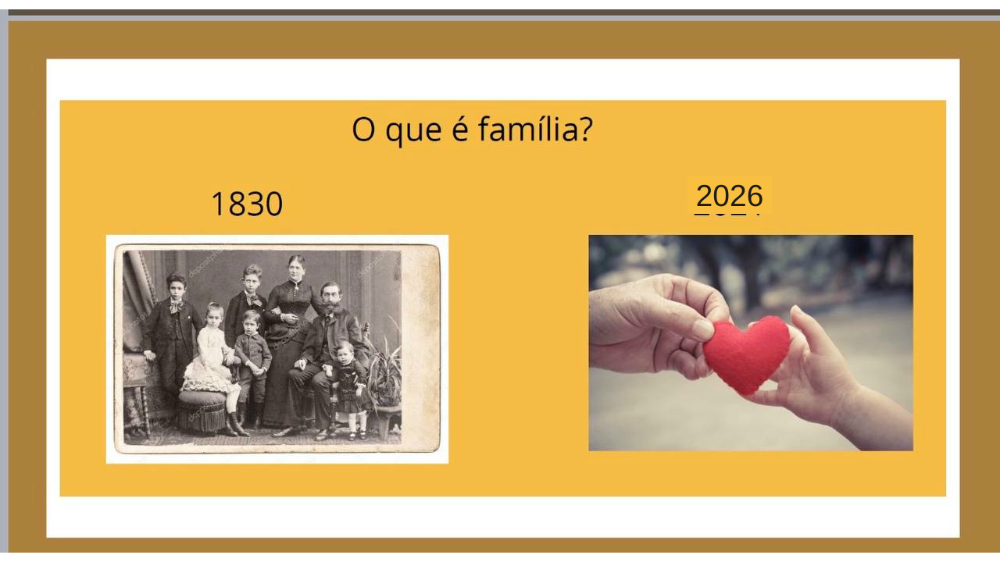
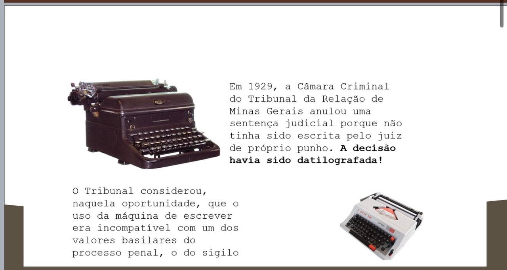

O que precisamos perceber antes de uma reação automática?
Formação de Gestores · TJRS
Comunicação AssertivaInteligência Emocional e Comunicação Não Violenta
Dia 2Formação de Gestores · TJRS · Dia 2
Bom dia!Como você chega para este segundo dia?
Observe, em silêncio, como estão seu corpo, sua energia e sua atenção agora. Não é necessário compartilhar.
1 minutoRetomada do Dia 1 · Grupo do Cochicho
Conversem em duplas
Do que aprendemos ontem, o que mais pode ampliar nossa margem de escolha antes de reagirmos automaticamente?
Desafio: construam uma única frase, curta e clara.
Instruções · 1 minuto
Construção da frase-síntese
Organizem a resposta em três movimentos
O que precisamos compreender sobre a situação e nossa experiência?
O que podemos escolher fazer a partir dessa compreensão?
Produto: uma frase-síntese da dupla.
4 minutos
Retomada coletiva
Vamos ouvir as sínteses
Vamos ouvir até quatro duplas. Cada dupla terá até 45 segundos.
Identifiquem o que aparece como percepção, compreensão e escolha.
Mapa da escolha
Da reação automática à ação intencional
Percebercorpo • emoção • intensidade • impulso›
Compreenderfato e interpretação • gatilho • contexto • consequência›
EscolherPAUSA • reavaliação • estratégia proporcional • ação intencional
Hoje avançaremos para a relação: comunicação clara, escuta e interação responsável com o outro.
Sistematização e ponte · 4 minutosDa reação à resposta
Como eu resolvo os problemas?
O que orienta minhas escolhas quando sou contrariado, pressionado ou provocado?
Comunicação e liderança
Como me comunico com a minha equipe?
Minha forma de comunicar favorece clareza, escuta e responsabilidade compartilhada?
Antes de interpretar
O que eu sei, o que suponho e o que ainda não sei?
Comunicação assertiva exige reconhecer lacunas de informação antes de completar a história com julgamentos.
Que pergunta preciso fazer antes de concluir?
Conhecimento↔Ignorância
Visível↔Invisível
Dito↔Ausente
Alta complexidade
“As interações entre conhecimento e ignorância, entre o visível e o invisível. O que define o conteúdo de um objeto é o que lhe falta, o não dito, o ausente.”Vasconcellos, 2001
Visão sistêmica na organização
As partes se relacionam e se afetam mutuamente
Uma organização é um sistema formado por partes interdependentes. A comunicação pode integrar áreas, conectar decisões e revelar impactos que não aparecem quando observamos cada parte isoladamente.
Que efeitos minha comunicação produz nas outras partes do sistema?
Área
Equipe
Decisões
Fluxos
Organização
A visão sistêmica facilita a comunicação e a integração entre as áreas. Partes e subsistemas se relacionam e se afetam mutuamente.Adaptação · Virtudes e Vicissitudes
Observação sem julgamento
Avaliar uma conduta não é rotular uma pessoa
Para conversar sobre problemas, descreva fatos e impactos sem transformar sua interpretação em sentença sobre o outro.
Estou descrevendo o que ocorreu ou classificando quem a pessoa é?
Juízo de valor não é julgamento moralizador
Podemos avaliar uma conduta, seus impactos e sua adequação sem definir o valor da pessoa.
ou
Classificar e julgar pessoas favorece a violência
Rótulos fecham a escuta. Fatos observáveis e necessidades abrem espaço para diálogo e responsabilização.
Significados mudam
Contexto, tempo e cultura alteram nossas interpretações
Tecnologias, hábitos e relações mudam. Uma resposta adequada ontem pode não servir hoje. Compreender o contexto amplia nossa margem de escolha.
Que mudança de contexto ainda não entrou na minha leitura do problema?

Contexto em transformação · 2 de 2
Práticas também mudam de significado

O que hoje parece inadequado pode ser reinterpretado quando o contexto muda?
Do dizer ao compreender
Comunicação acontece no encontro entre intenção e compreensão
Expressar com clareza, verificar o entendimento e escutar necessidades reduz o abismo entre o que se quis dizer e o que foi ouvido.
Como posso confirmar a compreensão sem presumir que fui claro?
“Quando entendemos nossas necessidades verdadeiras, criamos possibilidades de nos relacionarmos com mais prazer e a comunicação passa a ser mais significativa.”Adaptação · Marshall
♡Necessidades compreendidas
→
↔Relações com mais prazer
→
✦Comunicação significativa
Empatia · conceito
Empatia é presença e busca respeitosa de compreensão
O que essa pessoa está vivendo e o que pode ser importante para ela?
Suspender por um momento a preparação da resposta e acompanhar o que está sendo dito.
Investigar a experiência sem presumir sentimentos, intenções ou necessidades.
Checar a compreensão e deixar a pessoa confirmar, corrigir ou acrescentar.
Ideia central: empatia não é saber o que se passa. É demonstrar esforço para compreender.
Empatia · distinções
Compreender não é concordar
“Entendo que essa decisão tenha gerado preocupação e reduzido sua previsibilidade.”
≠
“Concordo que a decisão foi inadequada e deve ser revertida.”
Na gestão: reconheça a experiência e, depois, examine fatos, critérios, responsabilidades e alternativas.
Empatia · mitos e limites
Empatia não exige apagar diferenças ou limites
“Sei exatamente como você se sente.” Nossa história não é a experiência da outra pessoa.
Não descobrimos secretamente a intenção ou a “verdadeira necessidade” de alguém.
Compreender não é aceitar insultos, violar regras ou abandonar responsabilidades.
Empatia também não é absorver a emoção do outro, resolver tudo ou transformar conversa profissional em terapia.
Obstáculos à empatia
A escuta se fecha quando a solução chega antes da compreensão
Corrigir antes de entender; aconselhar sem perguntar; ensinar ou teorizar cedo demais.
Mudar de assunto; contar imediatamente a própria história; competir pelo sofrimento; consolar para encerrar a emoção.
Interrogar; interpretar intenções; diagnosticar; moralizar; concordar automaticamente sem conhecer os fatos.
O problema costuma ser a ordem: escutar e verificar primeiro; orientar, corrigir ou decidir quando for útil e necessário.
Da resposta automática à escuta
Troque a minimização por uma pergunta que abre espaço
Encerra a experiência antes de compreender o impacto.
→
“O que foi mais difícil para você nessa situação?”
Outra opção: “Você prefere que eu escute primeiro, que pensemos em opções ou que definamos um próximo passo?”
Ferramentas · mapa da escuta
A escuta pode avançar do fato ao que importa
O que aconteceu? Qual foi a sequência, decisão ou prazo?
Como isso afetou você? O que foi mais difícil?
O que é mais importante agora? O que precisa ser considerado?
Que apoio ou encaminhamento ajudaria neste momento?
Use como mapa, não como entrevista: uma pergunta bem escolhida pode bastar.
Ferramentas · presença
Presença é suspender a réplica para acompanhar a pessoa
Estou preparando uma defesa ou tentando provar meu ponto?
Acompanhe a fala e o contexto, sem dividir a atenção com telas ou tarefas.
Deixe espaço para a pessoa concluir. Silêncio não é punição nem abandono.
Adapte: presença e contato visual devem respeitar cultura, relação e canal.
Ferramentas · curiosidade
Curiosidade empática pergunta sem conduzir a resposta
“O que ocorreu concretamente?”
“O que veio antes e depois?”
“Como isso afetou você?”
“O que foi mais difícil?”
“O que é mais importante agora?”
“O que você gostaria que fosse considerado?”
Evite perguntas que já contenham acusação ou resposta esperada. Curiosidade não é interrogatório.
Curiosidade empática · escolha do apoio
Antes de aconselhar, descubra o que a pessoa procura
“Você prefere que eu escute primeiro, que pensemos em opções ou que combinemos um próximo passo?”
A pessoa precisa organizar a experiência e ser compreendida.
A pessoa quer explorar alternativas sem receber uma ordem pronta.
Há uma ação, decisão ou responsabilidade a combinar.
Ferramentas · paráfrase
Parafrasear devolve o sentido e convida a pessoa a corrigir
Use palavras próprias. Resuma o ponto que parece central. Termine com espaço para confirmação ou correção.
“Estou ouvindo que o prazo mudou sem aviso e que o mais difícil foi não conseguir reorganizar a equipe. É isso ou falta algo?”
Paráfrase não é: repetir mecanicamente, resumir para encerrar ou corrigir a narrativa.
Ferramentas · hipótese
Nomeie sentimento e necessidade como possibilidade, não como diagnóstico
“Você ficou frustrado porque precisava participar da decisão? Ou não é por aí?”
“Será que…?” “Fico pensando se…” “Faz sentido?”
A pessoa confirma, nega, ajusta ou traz outra necessidade.
“Você está com raiva porque precisa de reconhecimento.”
Se a hipótese não encaixar: agradeça a correção e continue escutando.
Ferramentas · fechar o ciclo
Resumir e checar evita que a interpretação vire fato
“Vou resumir o que entendi: o prazo mudou sem aviso, isso afetou a organização da equipe e você quer participar mais cedo das próximas decisões. Está correto? Falta algo?”
Reconhecer a experiência e verificar se entendi o que importa para a pessoa.
≠
Avaliar a interpretação, os fatos, os critérios e a decisão.
Ferramenta adicional · inferências
Entre um dado e um rótulo, há uma escada de interpretações
“Minha mensagem ficou sem resposta por dois dias.”
“O assunto não foi priorizado.”
“Ela não se importa.” A conclusão pode não ser fato.
Suba de volta: “Que informação falta? Que pergunta respeitosa testaria minha leitura?”
HSR · Heard, Seen, Respected
O HSR permite experimentar a escuta profunda
Convide uma história segura sobre um momento em que a pessoa não se sentiu ouvida, vista ou respeitada. Reserve reflexão individual breve.
Em duplas, cada pessoa fala por cerca de 5 minutos. O ouvinte permanece atento e silencioso. A pergunta possível é: “O que aconteceu depois?”
Conversem sobre a experiência de contar e escutar. Quartetos podem identificar padrões e significados.
Debriefing em grupo sobre quando a escuta profunda é valiosa. A estrutura completa dura aproximadamente 30 minutos.
Fonte: Liberating Structures · HSR. “O que aconteceu depois?” é a pergunta de acompanhamento indicada na estrutura.
HSR · adaptação pedagógica do curso
Integre empatia depois da escuta silenciosa
Durante o relato: presença silenciosa, sem interromper, interpretar, aconselhar ou corrigir.
→
Depois do relato e com autorização: paráfrase breve ou hipótese aberta, checada com quem contou.
A etapa B é adaptação didática, não requisito da especificação mínima do HSR. Convide a compartilhar apenas situações de baixa intensidade ou fictícias; é permitido passar a vez.
CNV · quatro componentes
Os quatro componentes organizam a expressão e a escuta
O que ocorreu, sem transformar interpretação em sentença.
Como a situação me afeta, sem acusação disfarçada.
O que é importante para mim ou para a outra pessoa.
Uma ação concreta, possível e aberta à resposta.
Não é fórmula rígida: são focos de atenção para aumentar clareza e conexão.
CNV · transformar rótulo em expressão
Troque “irresponsável” por fato, experiência e pedido
Rótulo: “Você é irresponsável e nunca cumpre o combinado.”
“Na entrega de terça, o prazo era 14h e recebi o arquivo às 17h, sem aviso.”
“Fiquei preocupada e frustrada…”
“…porque preciso de previsibilidade para organizar as entregas.”
“Pode me avisar até o meio-dia se houver risco de atraso e indicar um novo horário?”
Os sentimentos são escolhas de quem fala, não uma tradução universal do rótulo.
CNV · depurar a escuta
Ouça a crítica sem aceitar o rótulo como fato
“Você controla tudo e trata a equipe como incompetente.”
“Isso é absurdo. Você está sendo injusto.” A conversa passa a disputar quem tem razão.
→
“Quero entender. Qual revisão desta semana reduziu sua autonomia? Parece que confiança e participação são importantes. É isso ou há outro ponto?”
Depois de ouvir: reconheça impacto, apresente critérios e negocie o que pode mudar.
CNV · sequência interna de escuta
Separe o que foi dito da história que você contou sobre a intenção
Qual frase ouvi? Que evento concreto pode estar por trás do rótulo?
O que senti? O que posso imaginar que importa para o outro, sem tratar como certeza?
Que exemplo preciso pedir? Há uma conduta ou responsabilidade que exige limite?
Exemplo: “Você nunca escuta” → “Em qual situação a equipe não conseguiu concluir uma contribuição?”
CNV · clareza e responsabilidade
Empatia pode coexistir com um limite explícito
“Quero compreender a crítica, mas não vou continuar com xingamentos. Se você descrever o que ocorreu e o efeito, sigo na conversa. Se não, vamos combinar uma retomada.”
Identificar a situação e o impacto relatado.
Apresentar a própria perspectiva e os critérios usados.
Manter limites e seguir procedimentos institucionais quando couber.
Ameaça, assédio, discriminação ou risco exigem os encaminhamentos institucionais pertinentes; não são apenas um exercício de diálogo.
Aplicação · trios
Pratiquem escutar, reformular e dialogar
Parafrasear; perguntar por fatos; levantar hipótese com cuidado; checar entendimento.
Reformular o julgamento com observação, sentimento, necessidade e pedido concreto.
Reconhecer o que compreendeu, acrescentar a própria perspectiva e combinar um próximo passo.
Papéis: pessoa que fala, pessoa que escuta e observadora. Troquem os papéis e usem a rubrica da apostila.
Usem caso fictício ou de baixa intensidade; não exponham nomes, processos ou dados sensíveis. Qualquer pessoa pode passar.
Síntese prática
As listas ampliam nossa capacidade de escolha
Autoconectarreconhecer julgamentos • nomear sentimentos • localizar necessidades›
Expressardescrever fatos • assumir a experiência • formular pedidos›
Escutarir além dos rótulos • oferecer hipóteses • validar e ajustar
Quanto mais preciso é o contato com o que está vivo, menor a dependência de culpa, acusação e controle.
Autorregulação como escolha
O protocolo PAUSA cria espaço entre impulso e resposta
Situação, pensamento, emoção, intensidade, corpo e impulso.
Nomear sem julgamento e distinguir emoção de interpretação.
Revisar evidências, alternativas e informações ausentes.
Escolher a regulação adequada ao contexto e ao objetivo.
Responder com intenção e verificar o efeito.
Protocolo PAUSA · etapa 1
Perceba o fato, a emoção e o impulso antes de responder
Como aplicar
- Descreva o que ocorreu de forma observável, sem “sempre”, “nunca” ou rótulos.
- Note o pensamento que apareceu, sem tratá-lo como fato.
- Nomeie emoções, sinais no corpo e intensidade percebida.
- Identifique o impulso: rebater, fugir, interromper ou resolver às pressas.
Exemplo · crítica em reunião
Fato: a colega disse “você só decide sem ouvir ninguém”.
Pensamento: “ela quer me desautorizar”.
Emoção e corpo: irritação, rosto quente e tensão.
Impulso: responder que isso não é verdade.
Saída: separar situação, interpretação, emoção e impulso. Isso amplia a escolha.
Protocolo PAUSA · etapa 2
Acolha a emoção sem transformar interpretação em certeza
Como aplicar
- Diga a si mesmo o que está sentindo, com palavras simples.
- Reconheça que a emoção está presente, sem censura nem justificativa automática.
- Distinga emoção de avaliação: “estou irritado” descreve experiência; “fui desrespeitado” pode ser uma interpretação a verificar.
- Pergunte o que a emoção sinaliza como importante.
Exemplo · nomear sem acusar
Em vez de: “Sinto que ela está me desautorizando.”
Experimente: “Estou irritado e preocupado. Preciso compreender o que ela está apontando antes de responder.”
A emoção é reconhecida; a intenção atribuída continua em aberto.
Saída: “Posso sentir isso sem precisar agir imediatamente a partir do impulso.”
Protocolo PAUSA · etapa 3
Use perguntas para testar a leitura e encontrar o que falta
Perguntas para si
- O que observei diretamente e o que concluí?
- Que evidências sustentam minha interpretação?
- Que outra explicação é plausível?
- Que informação ainda não tenho?
- Qual pergunta respeitosa pode esclarecer o ponto?
Aplicando ao exemplo
Conclusão automática: “ela quer me desautorizar”.
Alternativas: talvez tenha faltado espaço para contribuições; talvez ela discorde do critério; talvez esteja descrevendo um episódio específico.
Pergunta: “Em qual decisão você sentiu que não houve espaço para a equipe contribuir?”
Saída: uma leitura mais precisa e uma pergunta que produz informação, em vez de uma reação ao rótulo.
Protocolo PAUSA · etapa 4
Selecione uma estratégia que combine com o contexto
Escolha com intenção
- Se há um problema concreto, planeje como resolvê-lo.
- Se a reação veio de uma suposição, busque informação antes de decidir.
- Se a ativação está alta, faça uma pausa breve, mude o canal ou combine uma retomada.
- Se precisa de apoio, procure a pessoa ou o procedimento adequado.
Exemplo · recuperar margem de escolha
Em vez de rebater na reunião, a gestora respira, anota a pergunta que precisa responder e decide escutar o exemplo primeiro.
Se não conseguir continuar com respeito e atenção, pode dizer: “Quero compreender isso. Preciso de alguns minutos para organizar a resposta e retomamos às 14h.”
Pausar não é abandonar a conversa. Combine quando e como retomá-la. Em urgência ou risco, siga o procedimento institucional aplicável.
Protocolo PAUSA · etapa 5
Aja com clareza, escuta e responsabilidade
Como aplicar
- Defina o objetivo e o limite da conversa.
- Escolha canal e momento adequados.
- Expresse observações e necessidades sem rotular; escute o que importa para a outra pessoa.
- Formule um pedido ou encaminhamento concreto.
- Depois, avalie o efeito e ajuste o próximo passo.
Exemplo · resposta possível
“Quero entender o que você percebeu. Em qual decisão faltou espaço para a equipe contribuir? Depois, explico os critérios que usei e verificamos se há algo a rever.”
Ao final: “O que combinamos? Quem fará o quê e quando voltamos a esse assunto?”
Saída: uma resposta intencional, um limite claro ou um próximo passo verificável.
Aplicação das cinco etapas
Do impulso à resposta: percorra o PAUSA por inteiro
“Ouvi ‘você decide sem ouvir’. Senti irritação e quis rebater.”
“Estou preocupado com o impacto da minha decisão.”
“Que situação específica ainda não conheço?”
“Vou escutar e pedir um exemplo concreto.”
“Em qual decisão faltou espaço? O que combinamos para a próxima?”
Importante: o PAUSA não garante acordo. Ele ajuda a distinguir fato, interpretação e emoção para responder com mais escolha.
Protocolo PAUSA · perguntas antes de agir
Use a sequência para compreender e escolher
O que ocorreu? O que pensei? Que emoção, intensidade, sinal corporal e impulso surgiram?
O que sinto? Há mais de uma emoção? Estou nomeando emoção ou interpretação?
Que evidências tenho? Que alternativa é plausível? O que ainda preciso saber?
Solucionar, reavaliar, aceitar, respirar, mudar o foco, pausar ou buscar apoio?
Qual resultado, limite e canal? O que mudou após minha resposta?
Duplas · prática guiada
Aplicar o PAUSA a uma situação profissional
30 minutosDuplasFicha prática PAUSA
Modele o relatório atrasado: fato, pensamento de descompromisso, emoções, intensidade, sinais corporais, revisão da interpretação, estratégia escolhida e resposta.
A usa um caso fictício e preenche a ficha. B conduz as perguntas sem aconselhar, interpretar ou diagnosticar.
Troquem os papéis. Cada pessoa seleciona uma estratégia, formula a resposta profissional e define como avaliará o efeito.
- Onde emoção e interpretação se misturaram?
- Qual estratégia foi proporcional?
- O que será observado depois da resposta?